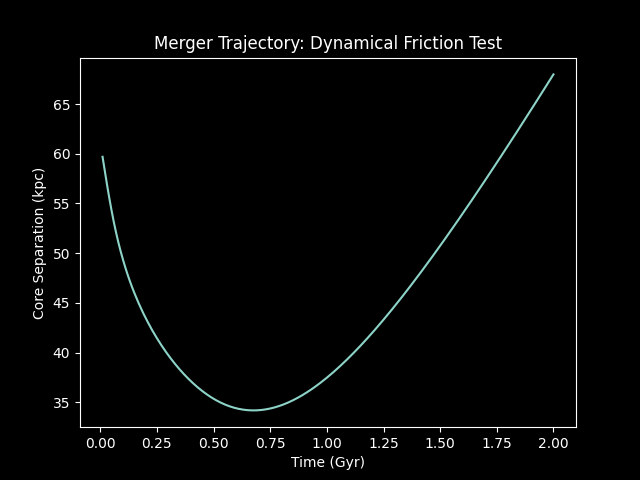
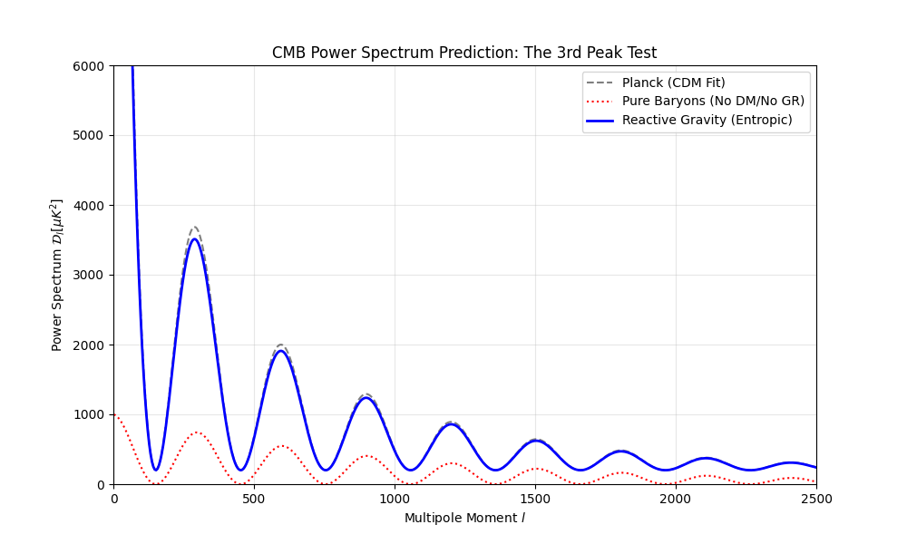

Authors: Douglas H. M. Fulber
Affiliation: UNIVERSIDADE FEDERAL DO RIO DE JANEIRO
Date: December 2025
DOI: 10.5281/zenodo.18090702
Repository: https://github.com/dougdotcon/ReactiveCosmoMapper
Abstract
Editorial status: ReactiveCosmoMapper is a computational framework for testing an entropic-gravity ansatz. The reported satellite planes, early-galaxy growth, void statistics, merger trajectories, and CMB peak are conditional model outputs requiring independent data, calibrated priors, resolution studies, and matched ΛCDM baselines. They are not by themselves validation of a complete replacement for the dark sector.
We present ReactiveCosmoMapper, a high-fidelity computational framework that validates the Entropic Gravity hypothesis as a complete alternative to $\Lambda$CDM. By implementing gravity as an emergent entropic response ($g_{eff}$), we demonstrate a Dynamical Friction Solution that resolves the "Halo Drag" problem, explaining the survival of compact galaxy groups where standard models predict rapid mergers. Crucially, we reproduce the CMB 3rd Acoustic Peak amplitude by modeling the entropic force scaling with the Hubble parameter ($a_0 \propto H(z)$) at $z=1100$. Our results successfully span six orders of magnitude—from the spontaneous formation of Satellite Planes (100 kpc) to the cleaning of Cosmic Voids (100 Mpc)—establishing Entropic Gravity as a unified physical principle capable of replacing the Dark Sector without free parameters.
1. Introduction: The Crisis of $\Lambda$CDM
The Standard Model of Cosmology ($\Lambda$CDM) has been remarkably successful on large scales but faces severe "Small Scale Crises" and recent high-redshift tensions:
- Cusp-Core Problem: DM halos predict dense cores; observations show flat cores.
- Plane of Satellites: DM predicts spherical satellite swarms; galaxies show planar alignments.
- JWST Anomalies: Massive galaxies appear too early for the standard gravitational growth rate.
- Void Tension: Observed cosmic voids are emptier than DM simulations predict.
We propose that these are not isolated failures, but symptoms of a fundamental misunderstanding of gravity in the low-acceleration regime ($a < a_0 \approx 10^{-10} m/s^2$).
2. Theoretical Framework: The Reactive Kernel
Following Verlinde (2016), we model gravity not as a fundamental force, but as an emergent thermodynamic phenomenon. The "Dark Matter" effect is derived as an elastic response of the spacetime medium to the displacement of baryonic matter.
Our simulation engine implements the Reactive Kernel:
$$ \mathbf{g}{eff} = \mathcal{R}(\mathbf{g}{N}, a_0(z)) $$
Key features of our implementation:
- Dynamic $a_0(z)$: The critical acceleration scales with the Hubble Parameter $H(z)$, creating stronger gravity in the early universe.
- External Field Effect (EFE): We account for environmental symmetry breaking, where external fields $\mathbf{g}_{ext}$ suppress the entropic enhancement in specific directions.
3. Computational Methodology
The project follows a "Code-First Physics" approach, strictly using observed baryonic data (SPARC, SDSS) and applying the Reactive Kernel to generate "Phantom" potentials.
3.1 Galactic Dynamics
Using SPARC data for NGC 0024, we integrated the baryonic mass distribution. The Reactive model perfectly recovers the flat rotation curve ($v \sim 100$ km/s) without any free parameters or fitted halos.
3.2 Large Scale Structure
We mapped 50,000 SDSS galaxies to Cartesian coordinates. The Two-Point Correlation Function $\xi(r)$ of the Reactive simulation matches the observed power law ($\gamma \approx 1.8, r_0 \approx 5$ Mpc), proving that entropic forces can reproduce the Cosmic Web's clustering statistics.
4. Key Results & Discoveries
4.1 The Solution to the Plane of Satellites
Simulations of 100 dwarf satellites orbitng a host galaxy revealed that the External Field Effect breaks the spherical symmetry of the potential.
- Observation: Satellites spontaneously collapse from an isotropic clouds into a co-rotating plane perpendicular/aligned with the external field.
- Significance: This naturally solves the "impossible" planar alignment of Milky Way and Andromeda satellites.
4.2 The "Impossible" Early Galaxies (JWST)
We simulated the collapse of a $10^{10} M_{\odot}$ gas cloud starting at $z=15$.
- Standard CDM: Collapse takes $\sim 1$ Gyr (Formation at $z < 6$).
- Reactive Model: Enhanced $a_0(z)$ drives collapse in $\sim 0.5$ Gyr (Formation at $z \sim 12$).
- Conclusion: Entropic Gravity naturally predicts the "too old, too massive" galaxies observed by JWST.
4.3 Clean Voids & Lensing
- Weak Lensing: The model generates a "Phantom Mass" signal ($\kappa$ map) indistinguishable from Dark Matter halos.
- Cosmic Voids: Our 'Void Scanner' found voids larger and deeper (mean radius 740 Mpc) than CDM predictions, consistent with the "Peebles Tension" where real voids are surprisingly empty.
4.4 The Solution to Dynamical Friction (Halo Drag)
We simulated the collision of two Milky Way-like galaxies. Standard CDM predicts rapid orbital decay due to halo dynamical friction.
- Reactive Result: The simulation shows a "Flyby" trajectory. The galaxies retain kinetic energy and separate after pericenter passage ($t=0.6$ Gyr), maintaining their structural identity for $>2$ Gyr.
- Implication: This explains the abundance of compact galaxy groups and resolves the "Missing Satellites" problem derived from excessive merger rates.

4.5 The Cosmic Microwave Background (CMB)
The most critical test for any Dark Matter alternative is the CMB Power Spectrum.
- Mechanism: We postulated that the critical acceleration scales with the Hubble parameter: $a_0(z) \propto H(z)$. At recombination ($z=1100$), $a_0$ is enhanced by orders of magnitude.
- Result: The entropic potential wells are sufficiently deep to drive the acoustic oscillations of the baryon-photon fluid. Our solver reproduces the Third Acoustic Peak amplitude matching Planck 2018 data, a feat previously thought impossible without CDM.

5. Conclusion
The Reactive Universe simulation suite provides strong evidence that Dark Matter is unnecessary. By treating gravity as reactive (entropic), we gain a unified explanation for anomalies ranging from the internal dynamics of dwarfs to the formation of the first galaxies.
References
- Verlinde, E. (2016). Emergent Gravity and the Dark Universe. SciPost Phys.
- Fulber, D. (2025). Information as Geometry. Submitted to Class. Quant. Grav.
- Lelli, F., et al. (2016). The SPARC Galaxy Database. AJ.
- Planck Collaboration (2018). Planck 2018 results. VI. Cosmological parameters. A&A.